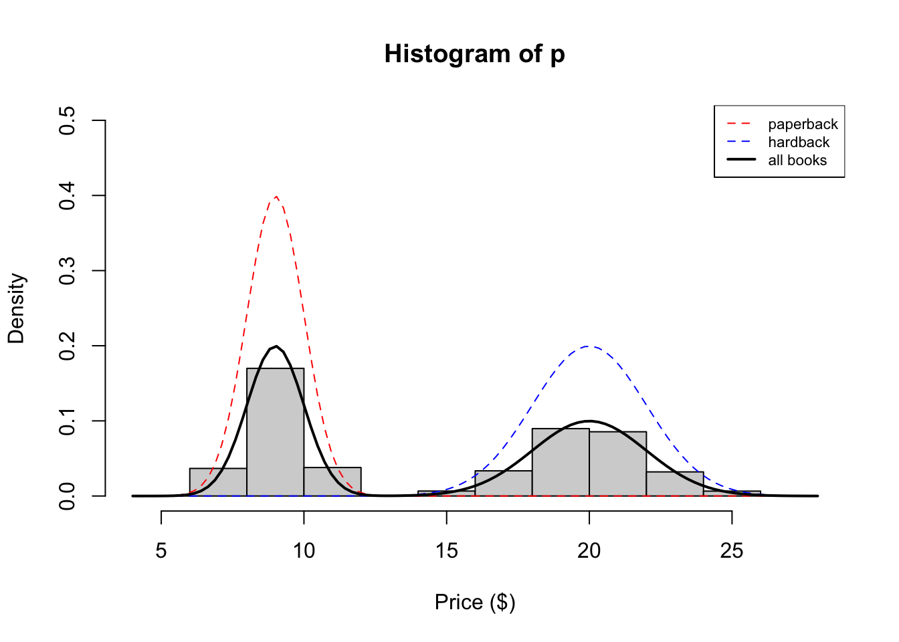
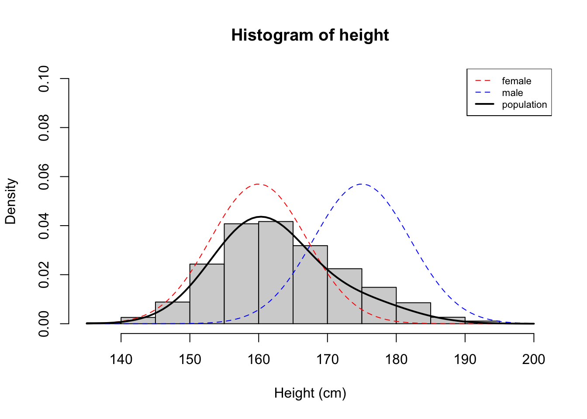

set.seed(12345)
p <- vector()
for (i in 1:5000) {
z_i <- rbinom(1, 1, 0.5)
if (z_i == 0) {
p[i] <- rnorm(1, 9, 1)
} else {
p[i] <- rnorm(1, 20, 2)
}
}Introduzione ai Modelli Mistura (MM)
Overview
We often make simplifying modeling assumptions when analyzing a data set such as assuming each observation comes from one specific distribution (say, a Gaussian distribution). Then we proceed to estimate parameters of this distribution, like the mean and variance, using maximum likelihood estimation.
However, in many cases, assuming each sample comes from the same unimodal distribution is too restrictive and may not make intuitive sense. Often the data we are trying to model are more complex. For example, they might be multimodal – containing multiple regions with high probability mass. In this note, we describe mixture models which provide a principled approach to modeling such complex data.
Example 1
Suppose we are interested in simulating the price of a randomly chosen book. Since paperback books are typically cheaper than hardbacks, it might make sense to model the price of paperback books separately from hardback books. In this example, we will model the price of a book as a mixture model. We will have two mixture components in our model – one for paperback books, and one for hardbacks.
Let’s say that if we choose a book at random, there is a 50% chance of choosing a paperback and 50% of choosing hardback. These proportions are called mixture proportions. Assume the price of a paperback book is normally distributed with mean \(9\) and standard deviation \(1\) and the price of a hardback is normally distributed with a mean \(20\) and a standard deviation of \(2\).
We could simulate book prices in the following way:
- Sample \(u_1, \dots, u_n\) from \(U \sim \text{Bernoulli}(0.5)\)
- If \(u_i = 0\) draw \(p_i\) from the paperback distribution \(N(9,1)\). If \(u_i = 1\), draw \(p_i\) from the hardback distribution \(N(20,2)\).
We implement this simulation in the code below:
We see that our histogram is bimodal. Indeed, even though the mixture components are each normal distributions, the distribution of a randomly chosen book is not. We illustrate the true densities below:

We see that the resulting probability density for all books is bimodal, and is therefore not normally distributed. In this example, we modeled the price of a book as a mixture of two components where each component was modeled as a Gaussian distribution. This is called a Gaussian mixture model (GMM).
Example 2
Now assume our data are the heights of students at the University of Chicago. Assume the height of a randomly chosen male is normally distributed with a mean equal to \(175\) cm and a standard deviation of \(7\) cm and the height of a randomly chosen female is \(N(160, 7)\). However, instead of 50/50 mixture proportions, assume that 75% of the population is female, and 25% is male.
We simulate heights in a similar fashion as above, with the corresponding changes to the parameters:
height <- vector()
for (i in 1:5000) {
u_i <- rbinom(1, 1, 0.75)
if (u_i == 1) {
height[i] <- rnorm(1, mean = 160, sd = 7)
} else {
height[i] <- rnorm(1, mean = 175, sd = 7)
}
}Now we see that histogram is unimodal. Are heights normally distributed under this model? We plot the corresponding densities below:

Here we see that the Gaussian mixture model is unimodal because there is so much overlap between the two densities. In this example, you can see that the population density is not symmetric, and therefore not normally distributed.
These two illustrative examples above give rise to the general notion of a mixture model which assumes each observation is generated from one of \(K\) mixture components. We formalize this notion in the next section.
Definition
Assume \(X\) is a random variable with distribution: \[\begin{align} X \sim \begin{cases} f_1(x;\theta) \quad &if \quad U=1 \\ \vdots &if \quad \vdots \\ f_k(x;\theta) \quad &if \quad U=k \end{cases} \end{align}\]
and where \(U \in \{1, \dots, k\}\) is the label indicating which component \(X\) comes from. In our height example, the mixture component were \(f_{X\mid U_i = male} \sim N(175, 7)\) and \(f_{X\mid U_i = female} \sim N(160, 7)\). Often times we don’t observe \(U\) (e.g. we might just obtain a list of heights with no gender information), so the \(U\)’s are called latent variables.
From the law of total probability, we know that the marginal probability of \(X\) is: \[f_X(x) = \sum_{u=1}^k f_{X \mid U=u}(x) \cdot \underbrace{P(U=u)}_{\pi_u} = \sum_{u=1}^k f_{X \mid U=u}(x;\theta_u) \cdot \pi_u, \qquad \pi_u \geq 0, \sum_{u=1}^k \pi_u = 1\]
Here, the \(\pi_u\) are called mixture proportions or mixture weights and they represent the probability that \(X\) belongs to the \(u\)-th mixture component. The mixture proportions are non-negative and they sum to one. We call \(f_{X|U=u}\) the mixture component, and it represents the distribution of \(X\) assuming it came from component \(u\). For discrete r.v. these mixture components can be any PMF and for continuous r.v. they can be any PDF. The mixture components in our examples above were normal distributions.
MLE of mixture models
If we observe random samples \(x_1,\ldots,x_n\) from \(X_1, \dots, X_n\) i.i.d. random variables with this mixture, then the likelihood function is: \[L(\mathbf{\theta}, \pi; \mathbf{x}) = \prod_{i=1}^n f(x_i) = \prod_{i=1}^n\sum_{u=1}^k \pi_u f_u(x_i; \theta_u)\] where \(f_u = f_{X \mid U = u}\).
For instance, assuming we are in the Gaussian mixture model setting where the \(u\)-th component is \(N(\mu_u, \sigma_u)\) and the mixture proportions are \(\pi_u\), a natural next question to ask is how to estimate the parameters \(\{\mu_k,\sigma_k,\pi_k\}\) from our observations \(\mathbf{x} = \{x_1, x_2, \dots, x_n\}\).
In order to find the maximum likelihood estimates for the parameters, we would have to maximize this function. Often, it is easier to maximize the log-likelihood function. In some cases a closed form can be derived by just setting the derivative with respect to \(\theta\) to zero. However, things are not always as easy, as the following example will show.
In the case of mixture models, the log-likelihood function would become: \[\begin{align} \ell(\theta, \pi; \mathbf{x}) &= \log L(\theta, \pi; \mathbf{x}) \\ &= \sum_{i = 1}^n \log f(x_i) \\ &= \sum_{i = 1}^n \log \left(\sum_{u=1}^k \pi_u f_u(\mathbf{\theta}; x_i)\right) \end{align}\]
Since the logarithm is outside the sum, optimization of this term is not an easy task.
Introduction to EM
Intuitively, if the latent variable \(U\) was known, the maximization of the function would be much easier. In fact, we would just have to maximize the parameters \(\theta_u\) for each joint distribution and than take the weighted average to obtain the marginal.
Formally, the PDF (and the corrispondent PMF for discrete variables) could be written as: \[\begin{align} f_{X, U} (x, u; \theta, \pi) = \prod_{u=1}^k [ \pi_u f_u(x; \theta_u)]^{I(U=u)} \end{align}\]
where \(I(U=u)\) is the indicator r.v. taking value 1 when the latent variable \(U=u\)
Tip
if \(U = 3\) with \(k=3\) categories the PDF would become: \[\begin{align} f_{X, U} (x, u; \theta, \pi) = \pi_1^0 f_1^0 \pi_2^0f_2^0 \pi_3^1f_3^1 = \pi_3 f_3 \end{align}\]
This form, in the case of a random sample from \(X1, \dots, X_n\) i.i.d. random variables where each \(X_i\) is labeled with a caregory \(U_i\) would lead to the likelihood function: \[\begin{align} L(\theta, \pi; \mathbf{x}, \mathbf{u}) = \prod_{i=1}^n f(x_i) &= \prod_{i=1}^n \prod_{u=1}^k [\pi_u f_u(x; \theta_u)]^{I(U=u)} \\ \ell(\theta, \pi; \mathbf{x}, \mathbf{u}) &= \sum_{i=1}^n \sum_{u=1}^k I(U=u) \log [\pi_u f_u(x_i; \theta_u)] \end{align}\]
Expectation step
The problem in the present case of the complete data likelihood function is that we did not observe the complete data (u is missing!). It may be surprising, but this problem of dealing with unobserved data in the end facilitates calculation of the ML parameter estimate.
In order to find this estimate, it is important to note that each entry of \(u\) is a realization of a random variable. In our height example, being a male or a female is the realization of a random variable.
However, since these realizations are not observable in reality, we have to consider each entry of \(u\) as a random variable itself. So, the whole likelihood function is nothing else than a function of a random variable and therefore by itself is a random variable (a quantity which depends on a random variable is a random variable). This means we can also take its expectation given the observed data and parameters. By linearity of expectation:
\[\begin{align} E[\ell(\theta, \pi; \mathbf{x}, \mathbf{u}) \mid \mathbf{x}, \theta, \pi] &= E\left[\sum_{i=1}^n \sum_{u=1}^k I(U=u) \log [\pi_u f_u(x_i; \theta_u)] \mid \mathbf{x}, \theta, \pi \right] \\ &= \sum_{i=1}^n \sum_{u=1}^k E[I(U=u) \mid \mathbf{x}, \theta, \pi ] \log [\pi_u f_u(x_i; \theta_u)] \end{align}\]
Now recall that \(I(U=u)\) is a Bernoulli r.v. and that its posterior probability \(P(U=u \mid \mathbf{x}, \theta, \pi)\) can be evaluated by Bayes’ theorem.
Tip
The Bayes’s theorem states that \[\begin{align} P(A|B) = \frac{P(A \cap B)}{P(B)} = \frac{P(B|A)P(A)}{P(B)} \end{align}\]
In this case:
- \(P(A\mid B)\) is: \(P(U=u \mid x, \theta, \pi)\)
- \(P(B \mid A)\) is the \(u\)th mixture component: \(f_u(x; \theta)\)
- \(P(A)\) is the a-priori probability of \(u\): \(P(U=u) = \pi_u\)
- \(P(B)\) is the marginal probability (or density) of observing \(x\) under the mixture: \(f_X(x; \theta, \pi) = \sum_{u=1}^k f_u(x; \theta) \pi_u\)
\[ P(U=u \mid x, \theta, \pi) = \frac{f_u(x; \theta_u) \pi_u}{\sum_{u=1}^k f_u(x; \theta_u) \pi_u} \]
The expectation step consists exactly in the estimation of posterior probabilities of U given a set of initial parameters.
Maximization step
Given a set of values for \(P(U=u \mid x, \theta, \pi)\), with \(u \in \{ 1, 2, \dots, k \}\), we can now find the values for \(\boldsymbol{\pi}\) and \(\boldsymbol{\theta}\) that maximize the expected log-likelihood function:
\[\begin{align} E[\ell(\theta, \pi; \mathbf{x}, \mathbf{u}) \mid \mathbf{x}, \theta, \pi] &= \sum_{i=1}^n \sum_{u=1}^k P(U=u \mid \mathbf{x}, \theta, \pi) \log [\pi_u f_u(x_i; \theta_u)] \end{align}\]
After finding a set of parameters, we repeat the expectation step with the new parameters. After it, we iterate until convergence.
https://www.cse.cuhk.edu.hk/~cslui/CSCI3320/Expectation%20Maximization%20-%20A%20Gentle%20Introduction.pdf
Acknowledgements: